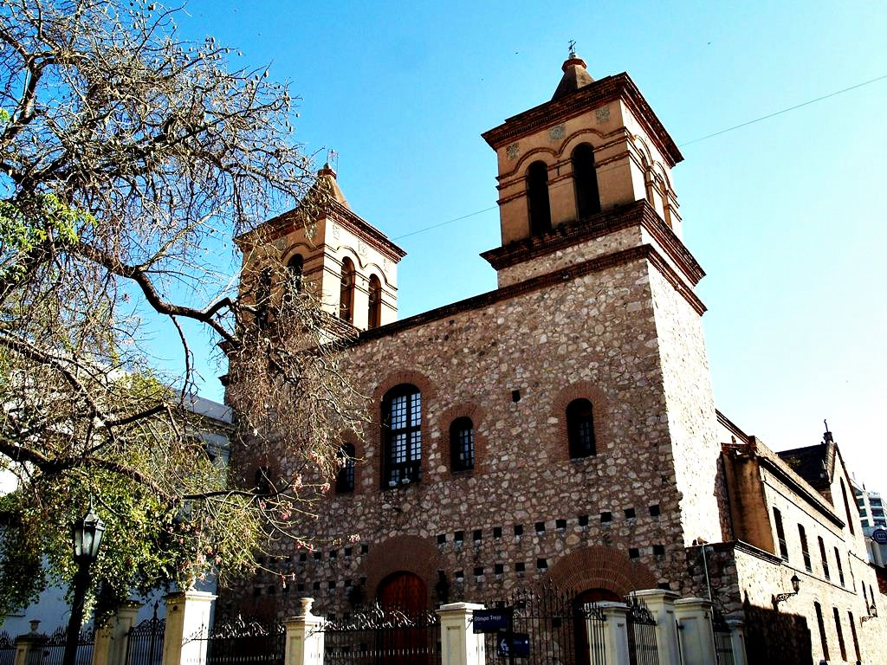
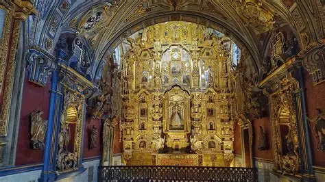
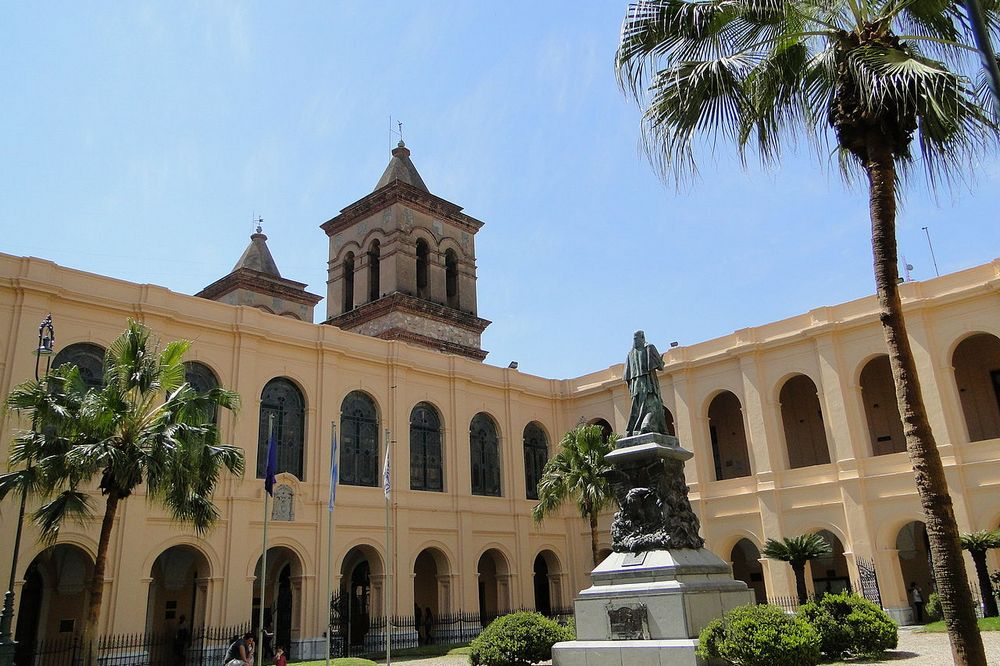
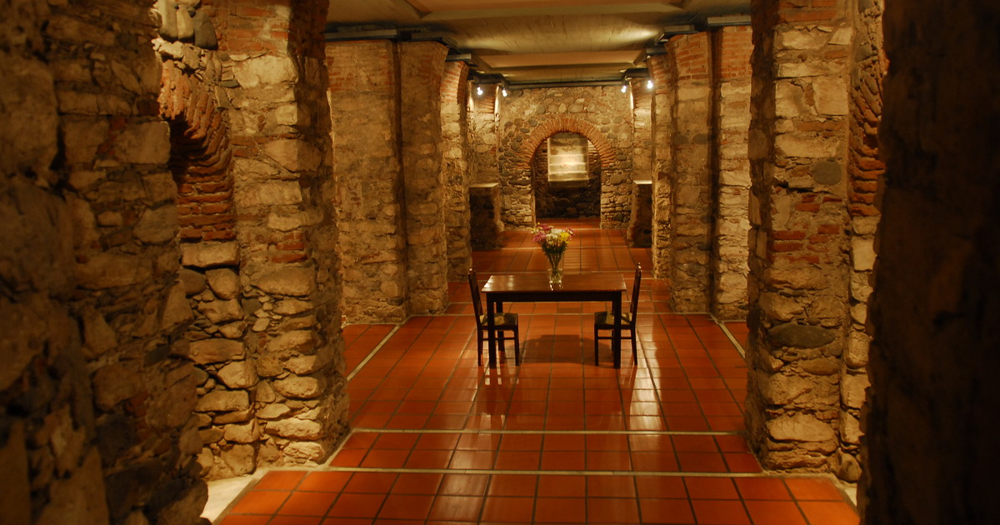

Built by the Society of Jesus starting in 1610.
Explore Jesuit Block

A collection of 17th-century buildings that showcase the colonial and educational history of the Jesuits.
Jesuit Block in Córdoba. These guys were the ultimate 'intellectual pioneers' of the 1600s, building South America’s first universities using a mix of European Baroque and local Guaraní craftsmanship.
It’s a "Linguistic Bridge." The Jesuits printed the first books in the region, often translating Christian texts into Guaraní, creating a weirdly beautiful hybrid culture.
Capilla Doméstica

The Domestic Chapel Jesuita (1644)Click to open side panel for more information was a private place of worship for the priests; it features a polychrome altar made without a single metal nail, held together entirely by wooden joints.
National University of Córdoba

One of the oldest universities in the Americas (founded 1613). You can explore its historic cloister and the UNC Historical MuseumClick to open side panel for more information, which houses a priceless collection of 17th-century books.
Cripta Jesuítica

Located underground at the corner of Colón and Rivera Indarte, the Cripta JesuíticaClick to open side panel for more information was rediscovered in 1989 during utility work. It originally served as a novitiate burial ground and later a water reservoir.
What to Expect
400-year-old libraries, hidden underground crypts, and some of the oldest colonial architecture in South America.